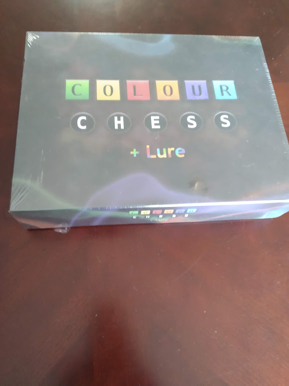

Colour Chess is a great variant that I enjoy even more than base Chess. As it turns out, “Colour Chess” is actually about 7 unique chess variants all packed into one. The flexibility of the components allow you to create non-standard boards and use non-standard chess pieces. If that was not enough, there are additional chess variants on their website. As someone who was on the chess team in high school for a year, I figured I’d take a closer look at Colour Chess and see if I could remember any of my old chess skills. For any fan of chess, Colour Chess will be a treasure trove of fun that is certain to improve tactical thinking and chess skills. For this Rulebook Review, I’d first like to go over the components, rules, and the rulebook, and then talk a bit about what I really liked in the game.
How to play Colour Chess
The main variant in the box is called Colour Chess, and is played on a chess board with one twist: each of the squares can be one of 6 different colors. The rules give you the option to competitively “draft” these tiles or create patterns, but I prefer their recommendation of just randomly filling out the board. In Colour Chess, you move twice in a row. Your first move must be to the same color that your opponent just moved to. Your second move must be with a different piece and onto a different color. Your opponent then moves to that color on their turn, and so on. Because players must make a move if they can, this creates a lot of interesting tactics. You can try and force your opponent to make a bad move, or prevent them from taking one of your pieces by forcing them to move their offensive piece away. In some cases, you can use this technique to save the King. For that reason, the goal of the game is to capture the opposing king (which is different from regular chess, where the goal is to checkmate the opponent). Other than these slightly modified rules involving check and checkmate, the pieces move exactly the same as they do in regular chess.
Components
At first, I was a bit disappointed by the components. I was used to playing chess with 3D pieces, so it felt like a downgrade to go to cardboard pieces. It was only after playing a few times that I realized that they made so much sense. 2D pieces are nice because you can flip them over onto the backside. This allows you to keep track of which pieces you have moved so far on that turn. This isn’t as relevant to Colour Chess, but very relevant in Swarm, where you could easily move 4-5 times per turn. And if I really wanted to, I could have just borrowed the 3D pieces from my other chess set and used them here.
The chess board itself is phenomenal in quality. The squares all fit snugly and don’t fall out, yet it is still easy to take the board apart or simply replace a square or two. The squares come with textures to help with color blindness. The squares are also double-sided, which allows for even more variants. The edges are modifiable, which allows for non-standard board configurations and a 4-player variant (this requires an extra set though). After several plays, the components show little sign of wear, which indicates that they are very durable. There was so much thought put into the components that I felt they deserved a special shout-out. Nicely done, Dog Eared Games! You won’t be disappointed with the components, even if they don’t look like much.
Organization – 5/5
How easy is it to look up a rule? Can you easily find the section you are looking for? Is the rulebook organized in a logical order so that everything makes sense during the first read-through?
I didn’t need to look through the rules very much as I was already very well versed with Chess rules. This being said, the rules came with a very helpful table of contents that helped find the sections I needed. Finally, the rules were organized very logically, and the variants were all contained with their own sections. The only caveat I found was that the rules kind of skimmed over the rules to base Chess, which are pretty important for playability. To some extent, I don’t think it is Colour Chess’s responsibility to teach Chess as their audience is probably all people who are already familiar with the game. For that reason, I didn’t deduct any points here. If you aren’t at all familiar with Chess though, you may have some difficulty getting through this rulebook.
Clarity – 5/7
How easy is it to understand the rules? Is the rulebook needlessly complex or not detailed enough? Could the rules be interpreted in multiple valid ways? Were there plenty of examples and images?
The rules were very easy to understand, and I loved the fact that the writers did not include complicated terms into the game. By using common terms and simply referring to the tiles as “colors,” it was very easy to do a read-through of the rules. The rules hit the sweet spot between not too complex but also not too simple. There were also plenty of examples and images.
I did feel that there could have been some examples of balanced pre-generated color maps in the rulebook. One of my chess-wiz friends and I had a game recently, and he mentioned that randomly setting up the board probably ran the risk of introducing a lot of luck. For him, he would have preferred to be able to use a map that was proven to be balanced for both players. I also thought that there could have been more explanation of why I would play one variant over the other. Some of my favorite parts of the rulebook were where they described a bit about how one variant might make “calculating moves in advance” harder. More statements like that would have made it easier to choose which variants I wanted to try from the enormous list of all variants. I normally believe that “less is more,” and don’t particularly find variant rules squeezed into the rulebook to be all that helpful. That being said, in this case I think an exception can be made, as all of the variants seemed to be of very high quality. Also, the entire game is a variant anyway, so the players are more primed towards trying out new and interesting configurations rather than playing “legit.”
Teaching the Game – 2/3
Does the rulebook help returning players to quickly relearn the game and explain it to others? Is it easy to determine any changes to the game based on player count? What about player aids?
The rules were simple enough that I had an easy time teaching them to a friend. They also had multiple suggestions for keeping track of the turn, and even a way to “pause” the game and return to it later (by flipping over the most recently moved piece). By having each player have tiles that they could use to keep track of which colors they had to move to, it made it a lot easier to think through the turns without worrying about forgetting which color you had to move to.
That being said, I think that it would have been nice to have some player aides of some kind (on the back of the rulebook perhaps) to quickly remind players of the rules that were different from normal Chess. For example, we almost forgot the rule that your second move can’t be to a color you moved to in your first move several times. Had the rules not been so fresh in my mind, I think it may have been easy to forget to teach it. I also did forget to talk about the fact that there is no “checkmate” until half-way through the game, so it definitely would have helped to have a section on “tips for teaching Colour Chess to other players.”
Bonus Point: Free App – 1/0
I add a free point whenever I think that there is something the publisher has provided outside of the rulebook that I find helpful in learning the rules.
Before I received this copy in the mail, I had played around on the official app for Colour Chess. You can get this on the appstore or on Google Play, and it is very nice for learning the rules. It comes with several “tactics puzzles,” which were really fun and helped me discover some of the strategies for the variant. Also, the tutorial is among the best ones I’ve seen for board games in terms of an app. Finally, it is completely free! Overall, the app was extremely high quality, and definitely helps learn the rules. My only complaint is that sometimes it can be hard to find an online opponent!
Overall – 13/15
A score of 0-6 would be an unintelligible rulebook. A score of 7-9 is a rulebook that is mediocre and likely requires further research to learn all the rules, such as watching a how to play video. A score of 10-12 is a rulebook sufficient to stand on its own legs. A score of 13-15 is an excellent rulebook that has next to no issues and has admirable qualities that go above and beyond that add to the game, theme, or overall experience.
The rulebook to Colour Chess was excellently written. I enjoyed the simplicity of the graphic design, as well as the plentiful images and examples. I also really liked the amount of variants the rulebook provides even though I normally don’t enjoy parsing through a bunch of different variants in other board games. If you choose to pick Colour Chess up, you will have no problems reading through the rules and understanding how to play if you have some familiarity with Chess already.
Gameplay thoughts
So I thought I would share a bit about the gameplay, and why I like it a lot, and what my Chess-wiz friend thought. I personally really enjoy Colour Chess as it introduces this whole other level of thinking into the base game. However, because of the restrictions on what colors you can move to, it doesn’t get too unmanageable. In regular Chess, you can often times be waiting for a long time for your opponent to make a move. This is true in the variant as well, but I actually felt like it could sometimes be even easier to think of a move compared to real Chess.
The other reason I absolutely love Colour Chess is that it blows apart the worst part of Chess (in my opinion): the memorization of the openings. One of the things I dislike about Chess is that the first 30 or so moves are pretty much set in stone in terms of the “best” moves. You can obviously try to deviate and throw your opponent off, hoping that they have not memorized the response. But of course, you then run the risk of them knowing the counter. This was very frustrating for me when I was trying to play Chess competitively, as I found that it was very annoying to try and memorize lines and openings and counters. This just wasn’t very fun. I like the fact that you can be competitive in Colour Chess without feeling the need to memorize anything at all.
My Chess-wiz friend thought that it may have taken this a bit too far, as he said that it didn’t even really feel like a traditional Chess variant, and felt more like its own game. He thought that while a lot of tactics and Chess knowledge applied to Colour Chess, the colors on the board were so important that they outweighed it. He also thought that it was difficult to determine diagonals in Colour Chess (I agreed with this). I actually find that to be a really good thing. If Colour Chess was too similar to normal Chess, I might not have enjoyed it as much as I did. Regardless, it should be something to think about before you pick this game up. If you are considering it, look up “Colour Chess” on your preferred App Store, and you can play it for free!
Note: I didn’t actually get around to playing any of the other variants, but I read through them all and they seem to be very unique and fun. I will have to try them the next time I play!
Are you a Chess player? Let me know your experiences playing Chess in the comments below! Thanks for reading!